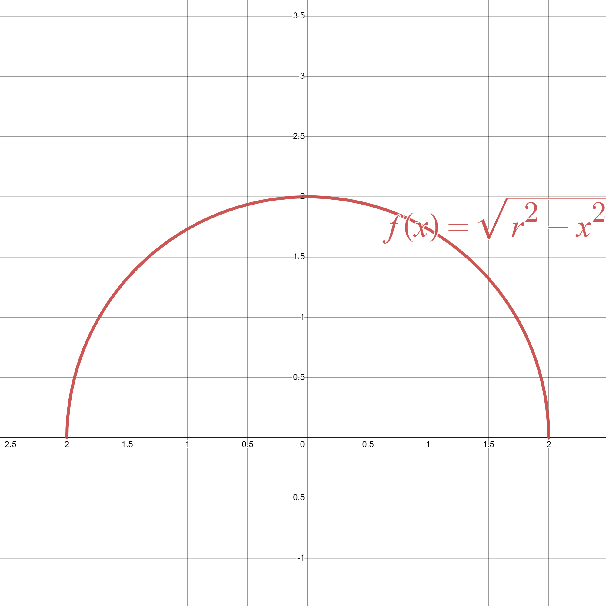
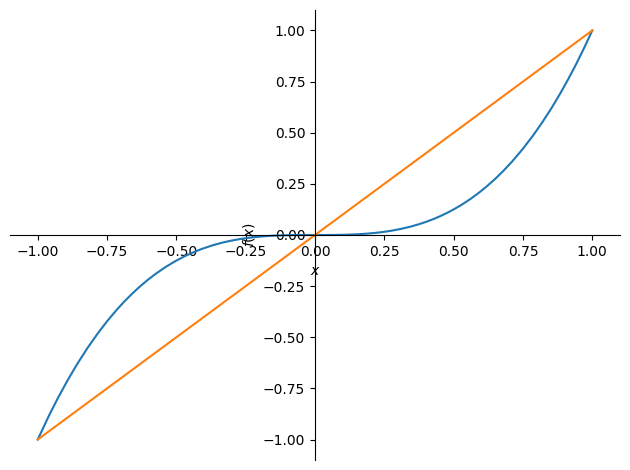
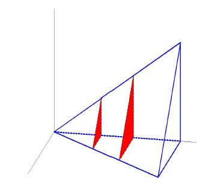
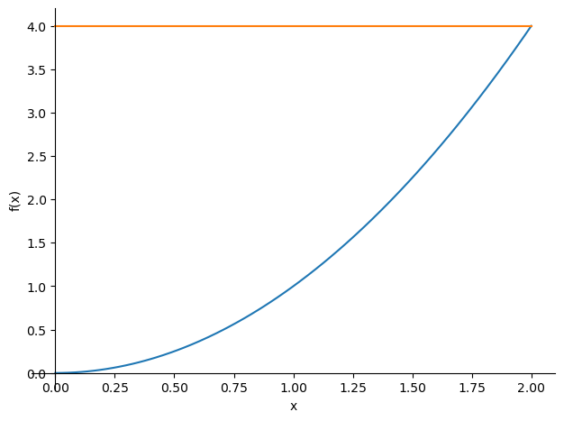

4.6. Applications of the integral\n#
In this section we are going to study two immediate applications of the Riemann integral: the computation of areas of plane regions and the volume of solids of revolution.\n
4.6.1. Computing areas\n#
4.6.1.1. Computing the area under the graph of a positive function#
Given an integrable function \(f:[a,b]\to R\), with \(f(x)\geq 0\) for every \(x\in [a,b]\), the area of the region bounded by the graph of \(f\), the \(x\)-axis, and the lines \(x=a,x=b\) is given by
Example:
We are going to work through an example that includes an integral a little more difficult than the ones that have been usual so far. We want to derive a formula that everyone already knows well: the area of a circle of radius \(r\).
We begin by noting that a semicircle of radius \(r\) is bounded above by the function \(f(x)=\sqrt{r^2 - x^2}\), as shown in the following figure.
{kind=link}

Then:
To solve this integral we apply the trigonometric substitution \(x=r\sin(t)\). Notice that \(r\) is given in the problem, so the new variable is \(t\). Then \(dx = r\cos(t) \, dt\). We must also change the limits of integration:
Lower limit: \(x=-r \Rightarrow t=\arcsin\left(\frac{-r}{r}\right) = \arcsin(-1) = -\frac{\pi}{2}\).
Upper limit: \(x=r \Rightarrow t=\arcsin\left(\frac{r}{r}\right) = \arcsin(1) = \frac{\pi}{2}\).
Then the original integral becomes
And now we must use the trigonometric identity \(\cos^2(t)=\dfrac{1+\cos(2t)}{2}\) to obtain an immediate integral:
Of course, we can leave this work to Sympy:
import sympy as sp
x = sp.Symbol('x', real=True)
r = sp.Symbol('r', positive=True)
t = sp.Symbol('t')
f_exp = sp.sqrt(r**2-x**2)
A = 2*sp.simplify(sp.integrate(f_exp,(x,-r,r)))
print('The area of the circle of radius r is: ')
display(A)
The area of the circle of radius r is:
4.6.1.2. Computing the area enclosed between the graphs of two functions#
Given two integrable functions \(f,g:[a,b]\to R\), the area of the region bounded by the graph of \(f\), the graph of \(g\), and the lines \(x=a,x=b\) is given by
To compute this integral in practice, we must apply the definition of absolute value and the additivity property of the integral with respect to subintervals.
Remark
Notice that, as a particular case, if we want to compute the region enclosed between a function \(f\) (positive or not) and the \(x\)-axis, we have to do:
Example:
Compute the area of the region enclosed between the graphs of \(y=x^3\) and \(y=x\).
To eliminate the absolute value, we must first locate the intersection points of the two graphs, apply additivity of the integral over subintervals, and determine which graph lies above the other on each subinterval:
We can also compute it with Sympy:
import sympy as sp
x=sp.symbols('x')
f_exp=x**3
g_exp=x
sp.plot((f_exp,(x,-1,1)),(g_exp,(x,-1,1)))
roots=sp.solve(f_exp-g_exp)
print('Intersection points: ',roots)
A=sp.integrate(f_exp-g_exp,(x,-1,0))+sp.integrate(g_exp-f_exp,(x,0,1))
print('The area of the region enclosed between the two graphs is: ',A)

Intersection points: [-1, 0, 1]
The area of the region enclosed between the two graphs is: 1/2
4.6.2. Computing volumes#
In this section we are going to study how to apply the integral to the computation of volumes of solids.
4.6.2.1. Cavalieri’s principle#
Suppose we have a three-dimensional solid, \(V\), such that, when cut by a plane perpendicular to the \(x\)-axis, for each \(x\in[a,b]\), it produces a cross-section of area \(A(x)\).
{kind=link}

Then the volume of \(V\), between the planes \(x=a\) and \(x=b\), is given by
You can see it in more detail here: https://es.wikipedia.org/wiki/Principio_de_Cavalieri
In this GeoGebra applet, created by Marco Rainaldi, you can visualize three-dimensional slices in many interesting examples: https://www.geogebra.org/m/nbknkjtp.
4.6.2.2. Solids of revolution: disk method\n#
The disk method is a particular case of Cavalieri’s principle… for solids of revolution. In this case, the cross-sections are circles of radius \(|f(x)|\) and therefore of area \(A(x) = \pi f(x)^2\).
Then, given an integrable function \(f:[a,b]\to R\), the volume of the solid of revolution generated by rotating around the \(x\)-axis the region enclosed by the graph of \(f\), the \(x\)-axis, between \(x=a,x=b\), is given by
You can illustrate the process in the following GeoGebra applet, created by José Luis Vergara Ibarra: https://www.geogebra.org/m/jxkmyeax
Example:
Compute the volume of a sphere of radius \(r\).
import sympy as sp
x=sp.symbols('x')
r = sp.Symbol('r', positive=True)
f=sp.sqrt(r**2-x**2)
V=sp.pi*sp.integrate(f**2,(x,-r,r))
print('The volume of the solid of revolution is: ')
display(V)
The volume of the solid of revolution is:
Given two integrable functions \(f,g:[a,b]\to R\), the volume of the solid of revolution generated by rotating around the \(x\)-axis the region enclosed between the graph of \(f\) and the graph of \(g\), between \(x=a,x=b\), is given by
Example:
Compute the volume of the solid of revolution generated by rotating the region enclosed between the graphs of \(y=x^3\) and \(y=x\) around the \(x\)-axis.
Again, to eliminate the absolute value, we must compute the intersection points and use additivity over intervals.
import sympy as sp
x=sp.symbols('x')
f=x**3
g=x
roots=sp.solve(f-g)
print('Intersection points: ',roots)
V=sp.pi*sp.integrate(g**2-f**2,(x,-1,0))+sp.pi*sp.integrate(g**2-f**2,(x,0,1))
print('The volume is: ',V)
Intersection points: [-1, 0, 1]
The volume is: 8*pi/21
The disk method can also be used to compute volumes of solids of revolution generated by rotating a region around the \(y\)-axis. In this case we obtain the same formula, but now the integral is with respect to the variable \(y\), and therefore the function must also be written in terms of \(y\)
Example:
Compute the volume of the solid generated by rotating around the \(y\)-axis the region bounded by the parabola \(y=x^2\) between \(y=0\) and \(y=4\)
import sympy as sp
x,y=sp.symbols('x,y')
sp.plot((x**2,(x,0,2)),(4,(x,0,2)))
f=sp.sqrt(y)
V=sp.pi*sp.integrate(f**2,(y,0,4))
print('The volume of the solid of revolution is: ',V)

The volume of the solid of revolution is: 8*pi
Exercise:
Compute the volume of the solid generated by rotating around the \(y\)-axis the region bounded by the parabola \(y^2=8x\) and the line \(x=2\)
4.6.3. To keep practicing#
You can find more exercises here:
Page (on the GeoGebra portal) by Daniel Partal García, teacher at Colegio Marista de La Inmaculada (Granada), with lots of proposed and solved exercises: https://www.geogebra.org/m/x8zyquyk#material/sqjs77gg
The usual blog: https://existelimite.blogspot.com/search/label/Aplicaciones de la integral